Custom Figure Generation
Impact
- The beta release drove over 3,000 generations from 300 users within a single week.
- Of nearly 200 feedback submissions, 76% of ratings were 4 or 5 out of 5, with 50% giving a perfect score.
- Reduced figure creation time from hours to minutes.
Problem
Creating scientific figures in BioRender is a time-intensive process, often taking scientists hours to produce visuals for presentations, posters, and publications. The goal is to get scientists to a final figure faster.
Solution
Custom figure generation eliminates the manual work of building figures from scratch. By leveraging AI to propose layouts and offer alternatives, scientists can get to an optimized final figure faster.
Keep the entry point familiar
The prompt input follows conventions users already know from other AI tools, with sample prompts and guidance on what to include so anyone can get started quickly.
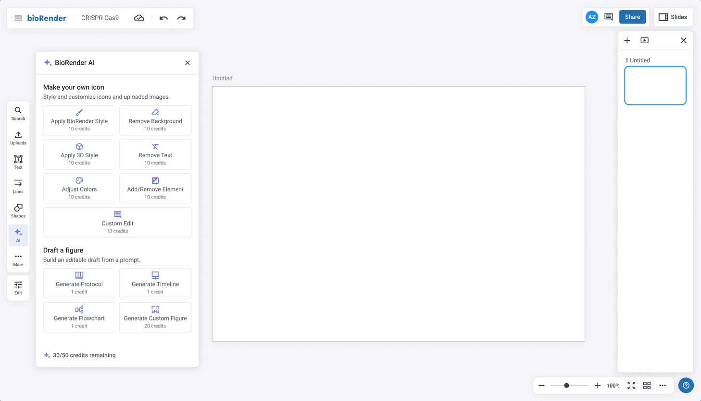
Give scientists meaningful choices
Three previews are generated, each optimized differently, so scientists can pick what works best for them while also helping surface which prompts produce the strongest results.
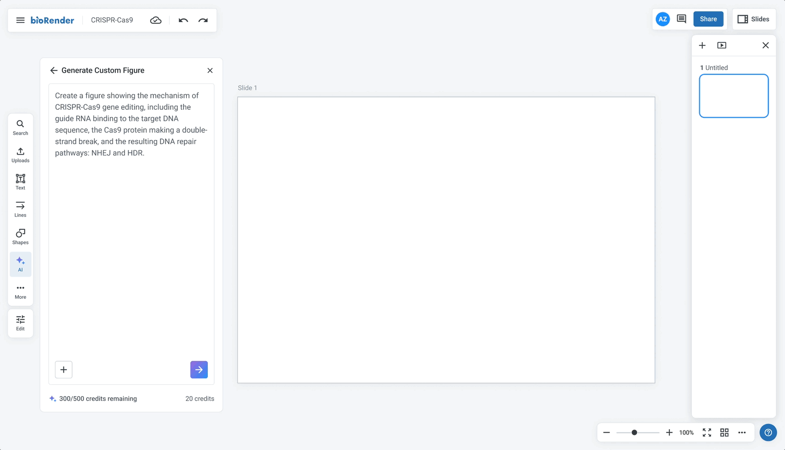
Let scientists refine their figure
For adjustments that go beyond what manual editing can accomplish, scientists can re-prompt to make more targeted, meaningful changes to their figure.
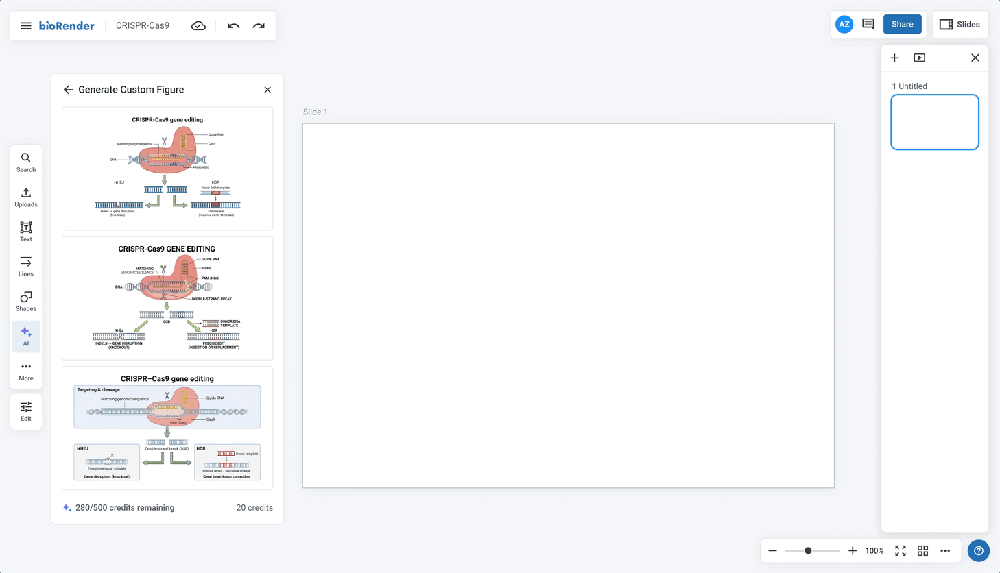
Give scientists immediate feedback
A non-editable preview is dropped onto the canvas instantly while the editable version generates in the background, giving scientists immediate feedback.
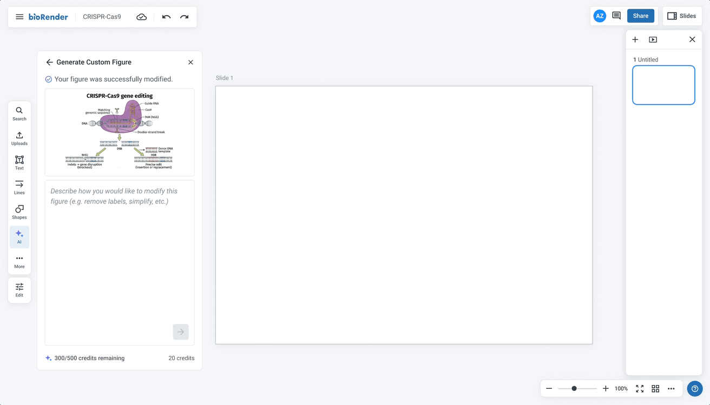
My role
As the sole product designer on a team of 3 engineers and a medical illustrator, I owned the end-to-end design process as well as user research.
Tools
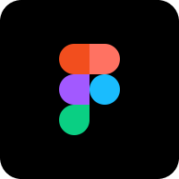
Approach
Prioritizing speed to get something in front of users quickly, I ran user research in parallel with the beta to stay competitive and iterated on findings as they came in.
User Research Plan
User research during the beta aimed to validate design decisions and assess tool quality and readiness for a broader release. I was looking to understand:
- How close were outputs to a final, publish-ready figure?
- What did scientists expect in terms of editability, and how important was it to them?
- If an editable version was available, would a flat image still have value?
- With editability added, would scientists want to make edits by prompting?
- What was the willingness to pay?
I used a hybrid approach combining real beta usage with output examples and targeted questions.
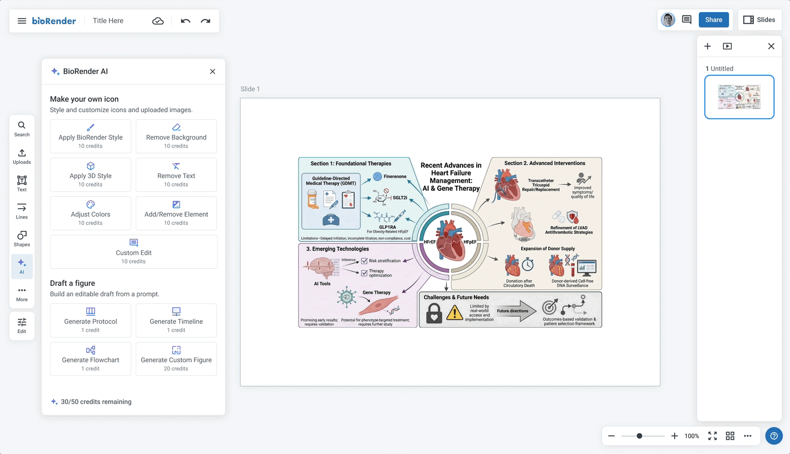
User Research Findings
Scientists expect full editability and are willing to pay for it.
Partial editability showed little perceived value. Scientists benchmarked willingness to pay at roughly 2x more for a fully editable output over a flat image, and even budget-conscious students indicated they'd pay for it within a subscription. The value proposition is tied to real structural control, not just text editing.
"I would spend the additional $2.50 to get full editability, after that I could modify each image by myself, change colors, size."
"Because me, I'm always changing things. I like to use the template tool and change stuff. So yes, I would spend extra for full editability."
"If I can't change the icons, then I would not bother to change the text."
Actionable takeaway: Full structural editability has a clear willingness to pay signal. Text-only does not. Release text editability in beta at no additional cost as a way to test and learn, and hold off on charging credits until full editability is available.
Scientists want to prompt big and edit small.
Prompting is seen as the path for structural changes and first drafts, while manual editing handles small tweaks like colors and sizing. Nobody wanted prompting as their only refinement path, and even with full editability, users still wanted the option to reprompt for larger changes. Editability handles the final 20%; prompting handles the first 80%.
"I would just click and change the colours manually…maybe then AI could do the rest."
"Once it has the base, I'd just add it to the editor hoping I could click this thing and delete it and call it a day."
"Even with editability, I'd still want to prompt for icon substitutions I couldn't make manually."
"You'd want to get as close as possible with a prompt, but then do most of the final edits yourself? Yeah… yeah… yeah."
Actionable takeaway: Support both prompting and manual edits.
Set pricing expectations upfront, not mid-flow.
Hidden costs were a major friction point. Scientists were willing to pay more upfront as long as they understood what they were getting. Charging for refinements and editability separately, after the fact, eroded trust and felt punitive.
"It's not just about full editability, but I feel like I'm ready to spend 20 credits on a single image as long as I can give it multiple prompts... if 20 credits covers everything, including allowing each component to be editable and allowing maybe a few extra prompts, then I want to really... if I'm paying 20 credits, I want to add a few prompts too."
Actionable takeaway: Charge enough upfront and set expectations clearly. Don't introduce additional costs later in the flow.
A fast non-editable preview has real standalone value, and scientists are willing to wait for editability.
The non-editable preview acts as a confidence checkpoint before committing to the full generation. Some users would use it as-is for internal or draft work, and knowing what's coming made the wait for the editable version feel worthwhile.
"Having a preview non-editable would be nice. Then 10 minutes would be okay, because you know what you expect."
"I can wait minutes, even hours. If it's not generated I'll have to do it by hand anyway, so I'm going to save time."
"10 to 30 minutes would be okay. You'd fill the time with other stuff, go do an experiment, then come back.”
Actionable takeaway: Two-stage model: instant non-editable preview, with the editable version rendering in the background.
Design Iterations
Editability and pricing were restructured
Text editability, originally planned as a paid feature, was released as a free beta with credits held until full structural editability is available. Separate charges for refinements were also removed, consolidating costs upfront so scientists know what they are paying before they commit.
Before
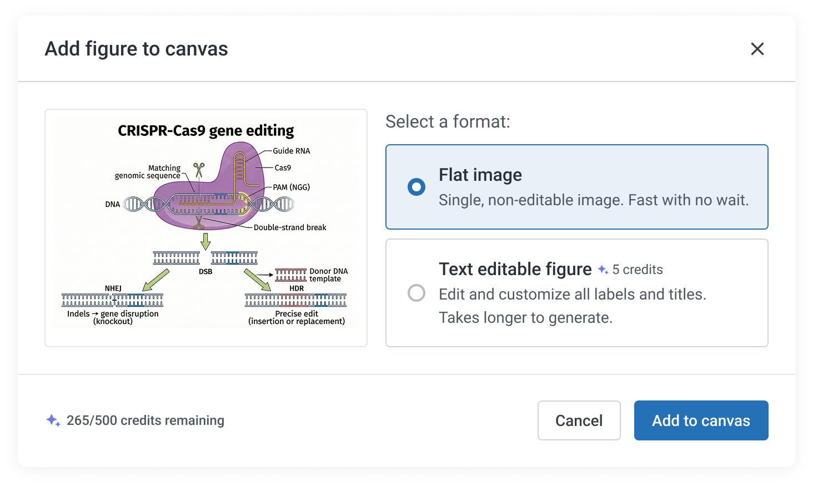
After
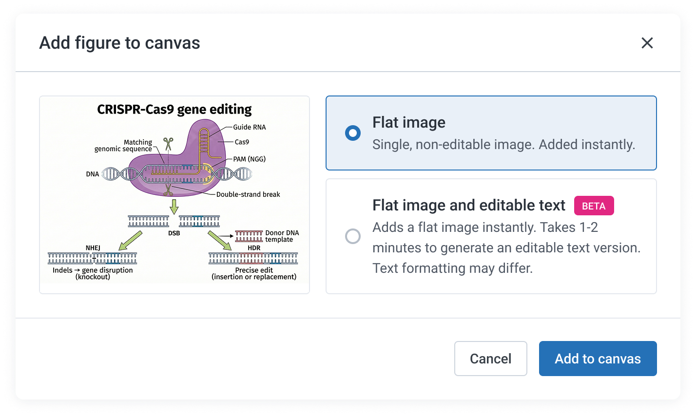
Surfaced editing actions earlier in the flow
To better support both prompting and manual editing, hover actions were made visible immediately on preview, rather than requiring scientists to select the preview first.
Before
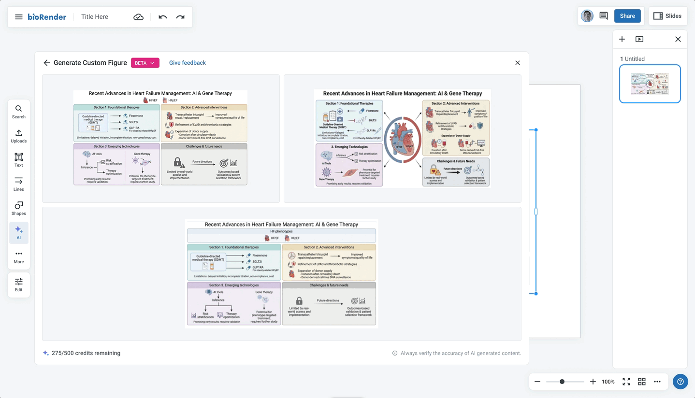
After
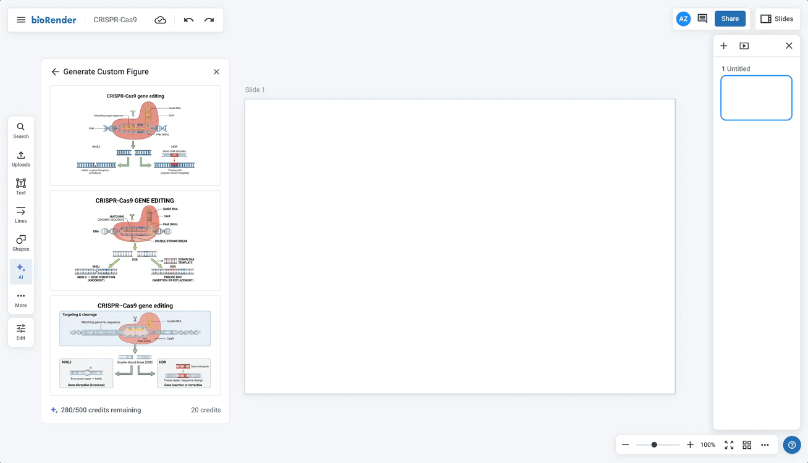
Added a non-editable instant preview stage
The original model asked scientists to choose between a flat or editable output upfront. Based on research findings, this was replaced with a two-stage model: an instant non-editable preview drops immediately, with the editable version rendering in the background.
Before
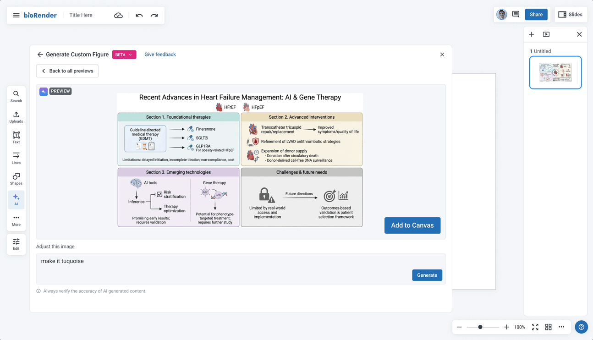
After
Learnings
Ship fast, iterate with confidence
Working on AI tooling meant getting comfortable releasing before things were fully polished, trusting that there would be room to come back and refine. With a competitive market and quality heavily tied to real usage, getting something in front of users quickly was more valuable than waiting for a perfect release.
A faster pace changes how you work
This project pushed a shift in working style, from iterating in cycles before releasing anything, to moving faster because implementation could keep pace with design decisions.